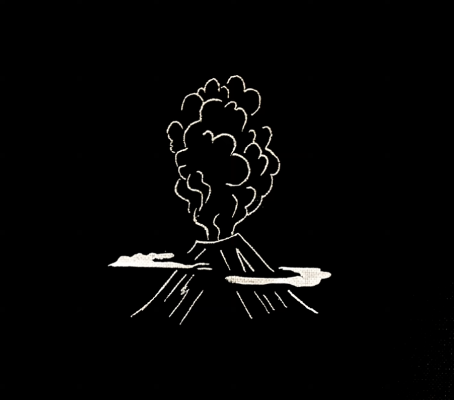

welcome to my personal website ! I use it as a platform to keep track of my projects, my programming notes, my research publications as well as my readings.
My name is Hugo Soubrier and I am from the South-East of France next to Nice.

To make it short I love everything that is related to Nature and Biology, but especially Infectious diseases and Epidemiology. I am also in love with everything related to the seas, from sailing to fishing and freediving.
I have studied Biology & Microbiology at Imperial College London, before an MSc in Control of Infectious Diseases at the London School of Hygiene and Tropical Medecine (LSHTM). Since my MSc, I have been working at Bernhard Nocht Institute of Tropical Medicine in the Africa team of the Virology department.
I am driven by the desire to do Field Epidemiology of Infectious diseases, especially in Africa. To this aim, I have
I have been deployed to Guinea as part of a GOARN/ WHO mission to response to the Ebola-Virus Disease outbreak that started in February 2021. The mission aims were to support local diagnostic laboratory, and collaboration continued throughout the year. After 5 missions in Guinea in the contect of Capacity building